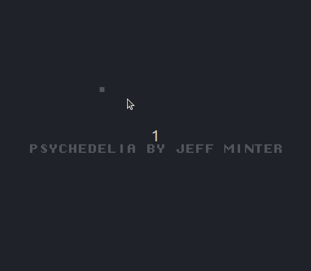

I ported Psychedelia to the Nintendo Entertainment System (NES). Possibly a technical miracle. Possibly not.
 Look at it in all its glory..'Porting' is probably overstating it. Like the Commodore 64, the NES had a 6502 CPU so if you have the code for Psychedelia to hand it is possible to do a very basic port such as mine with very little difficulty.
Unfortunately, we don't have the code of Psychedelia to hand. It is probably sitting on an antique disk somewhere in a cottage in Wales.
Fortunately, disassembling the game binary back into assembly language is relatively easy. So relatively-easy I did it a couple of years ago. So we have the code to hand after all!
The approach I took is very basic indeed. All of the NES-specific code lives in this file called nes.asm.
The rest lives in, you guessed it, psychedelia.asm. This
is mostly unmodified code of the C64 original. Some stuff had to be deleted obviously to make way for the NES-specific implementation, more of which later.
The C64 is a very friendly system to develop on - you write a value to a location in memory and it magically appears on screen. You write a value to a different location, it changes color. The NES on the other hand requires a lot more convolutions from you. While it allows up to 64 8x8 sprites, it does not really envisage you writing lots of characters to screen every frame - which is what we're doing here, just like the original Psychedelia. Of course, there is a world in which I could have just used sprites instead (and maybe there will be) but for a first pass what I have done is write as many as characters as possible to screen as I can in the small interval allowed by the NES between each frame.
This all happens in the MainNMIInterruptHandler, which is the routine that runs every
time the NES takes a little rest between drawing a frame on the screen. This little rest is known as the VBLANK, or
Vertical Blank. Every time Psychedelia wants to write a character to the screen, such as when moving the ship to a new
position, I instead write it to a buffer array called NMT_UPDATE.
This is done using a few different utility functions, depending on the use case, but mainly WriteCurrentCharacterToCurrentXYPosBatch which will append updates
to the list in NMT_UPDATE until there are enough of them to warrant writing to the screen itself in MainNMIInterruptHandler.
WriteCurrentCharacterToCurrentXYPosBatch
JSR GetLinePtrForCurrentYPosition
LDA #47
STA BATCH_SIZE
JSR AddPixelToNMTUpdate
; If we've got a few to write, let them do that now.
CPX #BATCH_SIZE
BMI @UpdateComplete
JSR PPU_Update
;FIXME: Get Color
; LDA colorForCurrentCharacter
@UpdateComplete
RTS
AddPixelToNMTUpdate does the actual writing to the NMT_UPDATE array:
AddPixelToNMTUpdate
JSR GetCharacterAtCurrentXYPos
CMP currentCharacter
BEQ @Return
LDA currentCharacter
STA (screenBufferLoPtr),Y
; Write to the actual screen (the PPU).
LDX NMT_UPDATE_LEN
LDA screenLineHiPtr
STA NMT_UPDATE, X
INX
LDA screenLineLoPtr
CLC
ADC currentXPosition
STA NMT_UPDATE, X
INX
LDA currentCharacter
STA NMT_UPDATE, X
INX
STX NMT_UPDATE_LEN
@Return
RTS
Crappy, almost non-existent. I stopped short of figuring out how to make sound work in NES properly.
Easiest thing is just to play it online here.
Maybe it will even work if you try to play it online in the iframe below. Worth a try maybe? A is the Fire key. Arrows for moving around.
You may have to click the screen a few times to get it going. Also, the browser experience is substantially slower than
running it natively.